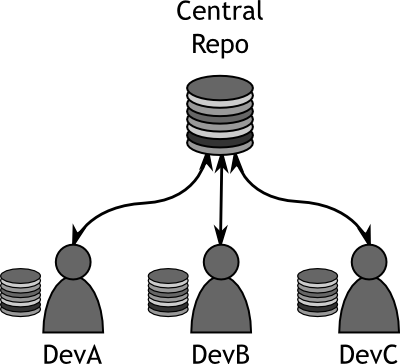
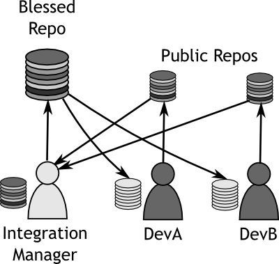
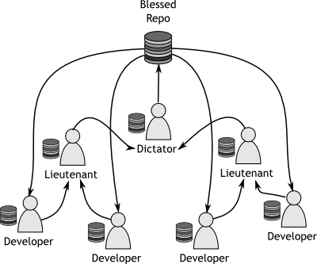

Week 1Day 3 - "A possible solution"
Version Control Nuances
There are many offerings for version control out there, Git, Mercurial, Subversion, CVS, and Bazaar to name but a few of the open source ones.
Perhaps a more pertinent question is just which version control system to use.
Each of them has their relative advantages and disadvantages, but some will be suited to certain tasks more than others.
Also, it's worth noting that if you are interacting with other pieces of software, or share some development with another set of developers, it is a good idea to enquire to see what they are using.
Usually you'll find collaboration, forking and patching a lot easier if you're using the same version control system as your upstream or partners.
In the trenches...
"So really it seems like the only real solution to this problem bar Klaus' suggestions of reducing the workforce to only one developer, thank you Klaus," Klaus nodded in acknowledgement back to John, "is to implement a version control system."
Markus chewed his lip.
"I can see where you're coming from here John, but aren't version control systems really expensive?"
"There are a number of open source offerings we could take a look at first," piped up a new voice in the discussion, "some of them are supposed to be pretty good."
"Let's all go away, take a look at the various pros and cons and reconvene tomorrow to discuss the findings," said John.
"Sound fair?"
So now we need to take a look at some various features of version control systems and see what the various advantages and disadvantages are of each.
We are going to focus on Git here primarily, as this is what the rest of the book is all about.
It is assumed that if you are reading this book, you have most likely already made the decision about which version control system you are going to use.
So let's talk about the various features that are prevalent in most version control systems.
Distributed Version Control
Version control systems usually fit into one of two categories; centralised, or distributed.
Git is a distributed version control system.
It has been designed to run almost everything at a local level.
This will become much more clear when we talk about other features of Git a little later on, but for now just understand that Git isn't tied to a centralised repository.
This is super powerful.
No Really!
Branching
Most version control systems offer branching as part of their default feature set.
Branching allows developers to create in essence a clone of their repository and mess around with it, safe in the knowledge that they can switch back to the original whenever they need to.
This allows developers the freedom to experiment with all manner of things without being afraid of affecting the original/clean code base.
Git implements branching in a special way.
Most older version control systems implement branching in a way that almost creates a separate copy of the repository.
This is slow and cumbersome.
Git's branching method gives developers the ability to create multiple local branches to play with.
Due to its distributed nature, when pushing code to a more central location for others to pull from, developers can choose which branches they want to push, allowing code to be experimented with privately.
The implementation of branching in Git is fast.
Due to the fact that repositories are stored locally, the speed of creating a local branch is limited only by the speed of the disks on a local machine.
Git's implementation is so lightweight that even this speed factor is negligible.
Staging
Git deals with committing changes into the repository differently to most other version control systems by the introduction of the staging area.
The staging area allows developers to prepare their commits before they are written to the repository.
Why is this useful or any different from any other version control system?
In Git you can make a change to a file, add it to the staging area, and then continue to make changes to that file, even though you have not yet actually committed anything.
It should be noted that it's not absolutely necessary to use the staging area, but it is there for developers wishing to utilise it.
Workflow
Due to the way that Git has been designed, it's possible to use it in practically any work flow you can think of.
Three of the most common workflows are explained below, and Git can work in any of these, making it one of the more versatile systems out there.
Centralised Workflow
In a centralised workflow, a single shared repository is used.
Multiple developers pull changes from here into local working copies, work on the local version, and then push it back up to the central location.
Git handles this workflow just like most other version control systems.
A developer can not push his changes until he has pulled everything up to the latest from the central repository and resolved any conflicts that may arise.
Using the centralised model for the workflow, each developer has the same level of access to the repository and is considered as important as each other.
For smaller teams, this method will work well, but as teams get larger, a centralised method may get tedious.
As more and more people start to access the same files, conflicts and other issues often begin appearing more often.
|  |
|
Figure 1
Centralised Workflow |
|
Integration Manager Workflow
The integration manager workflow is similar to the centralised workflow because there is still a blessed repository which everyone uses as a reference.
The difference here is that there is only one person who has the rights to push changes to the blessed repository.
This person is referred to as the Integration Manager.
This workflow is handled exceedingly well by Git.
Developers will work on their repositories locally and then once they are happy, will push their changes to a location where the Integration Manager can see them.
The Integration Manager will then review the changes that the developers have made and will merge them into his own local repository.
Once they are happy that everything is working well, the Integration Manager will push their changes to the blessed repository so that all the other developers can access the changes.
|  |
|
Figure 2
Integration Manager Workflow |
|
Dictator and Lieutenant Workflow
The dictator and lieutenant workflow is practically an extension to the integration manager workflow.
It is more suited to larger teams, where modules or sections of the code can be assigned to a Lieutenant who is responsible for blessing all of the changes to that particular section.
Once the Lieutenants are happy with their code, they make it available to the Dictator.
The Dictator then takes on a role similar to the Integration Manager from the previous model.
In the end, all of the changes are pushed to the blessed repository for the developers at the bottom of the tree to pull from.
|  |
|
Figure 3
Dictator and Lieutenant Workflow |
|
Terminology - Blessed
A blessed, or canonical, repository is one which has the approval of the managers of the project.
The blessed repository is supposed to be the de facto standard where all other clones are made from.
If there is one place where code should be correct, it is the blessed repository.
If you are hosting the project in a public place, the blessed repository will usually be the one that is made available to people as a stable point for developing from.
The main thing to remember, is that Git can utilise any of these workflows.
This makes it a very flexible system, allowing you to work in whichever way you decide.
Offline Committing
Perhaps one of the most useful and undervalued features of distributed version control systems is that of offline committing.
It may be undervalued because not all version control systems have it.
Offline committing is the ability to continue adding and committing files to the repository without being connected to a centralised repository.
When travelling or just simply when out of the office, developers and integrators alike are able to continue managing code, viewing histories, viewing diffs and committing changes to their repository.
This is all due to the fact that Git does 99% of all of its operations locally.
When a repository is cloned, Git actually sets up a copy of the entire repository locally, giving developers the flexibility to work anywhere, without requiring access to the company network.
When returning to the office, the developers simply push their changes to their "public" space, be it local or to a blessed location, and all of the commits that have been made whilst they are away are then made available to the rest of the team, including all history and snapshots.
Developer Interaction
One factor to consider when choosing a version control system, is that of developer interaction.
By this we are referring to the way in which developers use and interact with the version control system itself.
There are four main methods for VCS interaction
Graphical User Interface Client (GUI)
A graphical user interface allows the developer, or user, to physically manipulate the repository using a mouse pointer and a graphically rich environment.
A GUI client will typically consist of separate application which is run when a user wants to make changes to a repository such as adding files or committing changes.
Some developers prefer having a separate client with which to interact with their repository, whilst others prefer to have things integrated a little more.
Shell Extension Integration
Shell integration allows the user to interact with their repository using the graphical environment that they would usually use for manipulating files and performing routine directory maintenance.
One of the most common Shell Extensions for Git is the msysgit interface which integrates itself into Windows Explorer, allowing a user to right click on an entity whilst inside a git working tree, and be presented with a context sensitive menu for entering a shell for VCS operations.
Command Line Interface (CLI)
The command line interface is favoured by many developers as they can script with it and can see exactly what is going on, often in much more detail that with a GUI.
The CLI gives total control over the system and it is worth noting that almost all version control systems start life as command line driven interfaces.
Why is this so? It can take a lot of time and effort to put all the options and nuances of a system into a GUI.
The CLI will almost always be the most powerful of all tools, especially where version control systems are concerned.
|
|